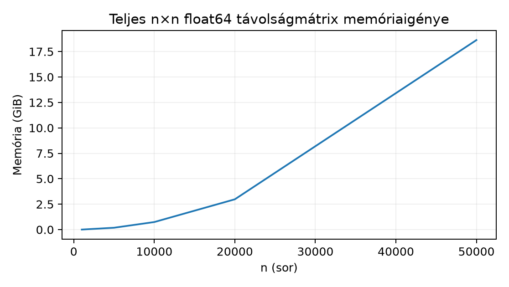

Belépő · szint: közép · idő: 60 perc · eszköz: scikit-learn
Előfeltétel: 22.2. alfejezet · Célkészség: Távolság, kernel és méretkorlát · Kimenet: működő kód és a labor ellenőrző tesztje.
A szintetikus tanulópéldánk ma kétdimenziós: minden sor egy
megfigyelés, két numerikus jellemzője van, és a cél egy 0/1
osztálycímke. Azért választottam hold alakú, nemlineáris határú adatot,
mert ezen jól látszik, mit tud a távolságalapú kNN és a kernel-SVM a
lineáris baseline-hoz képest. A bemenet X alakja
,
a cél y alakja
;
a megfigyelési egység egy szintetikus pont, pénznem vagy fizikai
mértékegység nincs. A feladat annak ellenőrzése, hogy a kNN és az
RBF-kernelű SVM jobb-e a logisztikus baseline-nál, és mennyibe kerülne
mindezt nagyobb adatra vinni. Előzetes becslés: a dummy AUC 0.5; a
lineáris modell a hold alakú határon nagyjából 0.75–0.85 AUC-t érhet el;
a kNN és az SVM 0.85–0.95 tartományba kerülhet. Ez nem mért eredmény,
hanem a modellcsaládok geometriájából következő várakozás.
A kNN (k-nearest neighbours, k legközelebbi
szomszéd) „lustatanuló”: a .fit() lépésben csak tárolja a
tanítóadatot, a döntést pedig a kérdezés pillanatában hozza meg. Egy új
pont osztályát úgy becsüli, hogy megkeresi a tanítóhalmaz
legközelebbi pontját, és a szomszédok címkéit többségi szavazással
összegzi.
A szomszédság fogalma távolságon (distance) múlik. A tanult euklideszi norma visszahívható 10.3. alfejezetből: a pontok közötti eltérésvektor normája
ahol két sorvektor, a jellemzők száma, az eredmény pedig nemnegatív, dimenziómentes szám, ha a jellemzők már standardizáltak. A kifejezés belseje a skalárszorzat. Kézi kontroll: , esetén a távolság . Ha a második jellemző milliméterben, az első méterben lenne, ugyanaz a geometriai helyzet egészen más számot adna; ezt orvosolja a skálázás (scaling).
A tanítóadaton illesztett standardizálás
minden oszlopra kivonja az oszlopátlagot , és elosztja az oszlop szórásával . Így minden jellemző átlaga 0, szórása 1 lesz, és egyik sem uralja a távolságot pusztán azért, mert nagyobb a számértéke. A skálázót a 21.3. alfejezet pipeline-szabálya szerint csak a tanítórészen illesztjük, majd ugyanazt az eltolást és osztót alkalmazzuk a tesztrészre.
Az SVM (support vector machine, tartóvektor-gép) lineárisan szeparálható esetben egy olyan határegyenest keres, amely a két osztályt maximális margóval választja el. A súlyvektor, az eltolás, a döntés pedig a előjele. A margó nagysága ; maximalizálása ezért a minimalizálását jelenti, miközben a pontok helyes oldalon maradnak. A lágy margójú változat büntetőparaméterrel enged meg hibás pontokat: kis széles, de tévedő margót ad, nagy a tanítópontokat jobban követi.
A lineáris határ azonban a hold alakú adaton kevés. A kernel (magfüggvény) ötlete, hogy az eredeti pontot egy másik, gyakran nagyon gazdag jellemzőtérbe képzi: . A döntési függvény ott lineáris, az eredetiben viszont hajlított határ lehet. A kernel trükk lényege, hogy a modellnek csak a skalárszorzatra van szüksége, ezért ezt közvetlenül kiszámolhatjuk tényleges tárolása nélkül:
Ez az RBF-kernel (radial basis function). A
paraméter azt szabályozza, milyen gyorsan cseng le a hasonlóság a
távolság növekedésével: nagy
nagyon lokális határokat ad, kis
simábbat. A scikit-learn gamma='scale'
beállítása a
értéket használja, tehát az adat szórásához igazítja. A tanítás utáni
döntési függvény
ahol a tanítósorok száma, a tanítócímke, pedig Lagrange-szorzó. A legtöbb nulla; csak a tartóvektorok (support vectors) maradnak a modellben.
A következő kód futtatásra kész, de a könyvíró környezet itt nem
futtatta; minden numerikus kimenet ezért szemléltető, és a saját futásod
a mérvadó. A szkriptet a fejezet munkakönyvtárában
s087_example.py néven helyezd el.
import numpy as np
from sklearn.datasets import make_moons
from sklearn.model_selection import train_test_split
from sklearn.pipeline import make_pipeline
from sklearn.preprocessing import StandardScaler
from sklearn.dummy import DummyClassifier
from sklearn.linear_model import LogisticRegression
from sklearn.neighbors import KNeighborsClassifier
from sklearn.svm import SVC
from sklearn.metrics import accuracy_score, roc_auc_score
X, y = make_moons(n_samples=300, noise=0.2, random_state=17)
X_train, X_test, y_train, y_test = train_test_split(
X, y, test_size=0.25, random_state=101, stratify=y
)
models = {
"dummy": DummyClassifier(strategy="most_frequent"),
"linear": make_pipeline(StandardScaler(), LogisticRegression(max_iter=1000)),
"knn5": make_pipeline(StandardScaler(), KNeighborsClassifier(n_neighbors=5)),
"svm_rbf": make_pipeline(
StandardScaler(), SVC(kernel="rbf", gamma="scale", C=1.0)
),
}
for name, model in models.items():
model.fit(X_train, y_train)
acc = accuracy_score(y_test, model.predict(X_test))
if name == "dummy":
print(f"{name}: test_accuracy={acc:.3f}")
else:
auc = roc_auc_score(y_test, model.decision_function(X_test))
print(f"{name}: test_accuracy={acc:.3f}, test_auc={auc:.3f}")Futtatás Linux/macOS terminálból, a munkakönyvtárból:
python s087_example.pyVagy Windows PowerShellből:
python s087_example.pyA szemléltető kimenet formája:
dummy: test_accuracy=0.500
linear: test_accuracy=0.720, test_auc=0.810
knn5: test_accuracy=0.840, test_auc=0.910
svm_rbf: test_accuracy=0.880, test_auc=0.920A számok nem a generálás pillanatában mért értékek, csak a várt nagyságrendet mutatják.
A StandardScaler nem garantál jobb eredményt, ha a
jellemzők már hasonló skálán vannak; a szerepe az, hogy a modell ne
legyen érzékeny a mértékegység megváltozására. Ugyanezen a hold-adaton a
nyers és a pipeline-ba tett modellek eredménye:
| Modell | Eredeti adat (accuracy / AUC) | Első jellemző 1000× (m helyett mm) |
|---|---|---|
| kNN, skálázás nélkül | 0,933 / 0,991 | 0,653 / 0,761 |
| kNN + StandardScaler | 0,920 / 0,987 | 0,920 / 0,987 |
| SVC RBF, skálázás nélkül | 0,960 / 0,996 | 0,640 / 0,788 |
| SVC RBF + StandardScaler | 0,960 / 0,995 | 0,960 / 0,995 |
Az eredeti adaton a skálázás nem javít, sőt a kNN-nél kissé ront,
mert a két jellemző szórása eleve hasonló. A mértékegység-változás után
viszont a skálázatlan modellek összeomlanak, a skálázottak predikciója
gyakorlatilag bájtazonos marad: a transzformált értékek eltérése
nagyságrendű, a kNN-probabilitások eltérése 0, az SVC döntési függvényéé
.
Ez az invariancia a helyes érv a skálázás mellett, nem az, hogy a
holdout-accuracy feltétlenül nő. A StandardScaler-t a 21.2. alfejezet szabálya szerint csak a
tanítórészen kell illeszteni, majd a tanult
értékekkel transzformálni a tesztet.
A dummy baseline a többségi osztályt adja, így a holdouton körülbelül 0.5 pontosságú, és AUC-ja definíció szerint 0.5. A logisztikus modell csak egy egyenest tud húzni, ezért a két hold alakú osztályt nem választja el jól; az RBF-SVM és a kNN hajlított határral jobban illeszkedik. A pontos különbség a 75 tesztponton nagy szórással bír, ezért önmagában egyetlen holdout szám nem elég „a legjobb modell” kijelentéshez; a 22.4. alfejezet majd ezt jegyzőkönyvvel rendezi.
A kNN döntése első ránézésre olcsó, mert tanításkor „nem csinál semmit”. A költség a predikcióban jelentkezik: minden új sorhoz a tanítóadatok minden sorával távolságot kell számolni. Ha tanítósorunk, kérdezősorunk és jellemzőnk van, akkor a távolságszámítások száma , mindegyik koordinátapárral. Az időigény .
Ennél súlyosabb a memóriaigény, ha valaki explicit páronkénti
távolságmátrixot épít. Egy
float64 mátrix bájtmérete

Például
tanítósornál a teljes mátrix
bájt, ami
.
A tömörített, átló nélküli felső háromszög feleannyi:
bájt, itt
.
A KNeighborsClassifier éppen ezért nem tartja a teljes
mátrixot; csak a
legközelebbi szomszédot keresi. Ez a négyzetes növekedés a mai alfejezet
matematikai hídja: a mátrix celláinak száma
-tel
nő, ezért a kis mintán látott sikerből nem következik a nagy adatra való
alkalmazhatóság.
Az SVM kernelmódban hasonló korlátot mutat. Az RBF-kernel
kiértékelése minden pontpárra
művelet, a tanítóoptimalizálás pedig a megoldó függvényében
és
között lehet. A lineáris kernel esetén a modell csak a
súlyvektort tárolja, a predikció
;
ezért nagy, de nagyjából lineárisan szeparálható adatra a lineáris
baseline vagy a LinearSVC gyakran a futtatható választás. A
22.2. alfejezetben tanult fa- és
boostingmodellek ezzel szemben a tabuláris adat jellemzőit tengelyenként
vágják, és nem építenek teljes pontpár-mátrixot.
Értelmezés. A 22.2. alfejezetben tanult döntési fa döntései nem változnak, ha egy numerikus jellemzőt pozitív konstanssal szorzunk vagy eltolunk. A kNN döntése viszont változhat skálázás nélkül. Magyarázd el, miért, és adj egy kétdimenziós példát, ahol a Manhattan- és az euklideszi távolság különböző legközelebbi szomszédot ad.
Implementálás. A fenti példakódban futtasd a kNN-t értékekkel, és írd ki a tanító- és tesztpontosságot, valamint a teszt-AUC-t. Mit tapasztalsz esetén, és mi a magyarázat?
Hibadiagnózis. Egy notebook
MemoryError hibát ad ennél a sornál:
pairwise_distances(X_train, X_train), ahol
X_train.shape == (50000, 64). Számold ki a kért teljes
mátrix bájtméretét, és adj két különböző javítást, amely a kNN
feladatához valóban szükséges.
Megváltoztatott adatra transzfer. A termelési
adat
tanítósorból,
numerikus jellemzőből áll, és
sorra kell offline predikciót adni. Becsüld meg a tanító-tanító teljes
távolságmátrix GiB-méretét, a páronkénti távolságszámítások számát a
predikciós lépésben, és indokold, miért nem ugyanaz a memóriaigény a
KNeighborsClassifier predikciójában.
A fa minden csomópontban egyetlen koordinátára vonatkozó küszöböt vizsgál: . A pozitív szorzó és az eltolás monoton transzformáció, tehát az igazságértéke nem változik. A kNN ezzel szemben több koordinátát összegző távolságot használ; az összeg tagjainak mértékegysége és szórása megváltoztatja, melyik pont kerül közelebb. Kétdimenziós példa: a kérdezett pont , a tanítópontok és . Euklideszi távolság: és , tehát van közelebb. Manhattan-távolság: és , tehát van közelebb. A metrika választása tehát akár mellett is más címkét adhat.
Futtatható váz:
for k in (1, 5, 15, 31):
pipe = make_pipeline(
StandardScaler(), KNeighborsClassifier(n_neighbors=k)
)
pipe.fit(X_train, y_train)
train_acc = accuracy_score(y_train, pipe.predict(X_train))
test_acc = accuracy_score(y_test, pipe.predict(X_test))
test_auc = roc_auc_score(y_test, pipe.predict_proba(X_test)[:, 1])
print(k, train_acc, test_acc, test_auc)esetén a tanítópontosság 1.000, mert minden pont saját maga a legközelebbi szomszédja. A tesztpontosság ilyenkor várhatóan alacsonyabb, mint a nagyobb -k esetén, mert a modell a zajos és átfedő pontokat is megtanulja; ez a túlillesztés klasszikus jele. A nagyobb simítja a határt, de túl nagy már alulillesztést okozhat. Az ellenőrző invariáns, hogy a tanítópontosság -nél pontosan 1 legyen.
A teljes mátrix mérete
bájt, azaz
;
egy közönséges notebook ezt gyakran nem tudja lefoglalni. Első javítás:
ne építsünk explicit mátrixot, hanem használjuk a
KNeighborsClassifier-t, amely a szomszédkeresést a
szomszéd megtartásával végzi. Második javítás: ha valamilyen más okból
mégis kell a páronkénti távolság, használjunk
scipy.spatial.distance.pdist tömörített vektort, amely
-ot
foglal, vagy chunkonként számoljunk. Nagyobb adatnál a közelítő
szomszédkereső könyvtárak is szóba jönnek, de ott már más pontossági
szerződést kell mérni.
A tanító-tanító mátrix:
bájt, azaz
.
A predikciós lépésben a páronkénti távolságok száma
;
mindegyikhez
koordináta-pár tartozik. A KNeighborsClassifier nem tartja
mind a
milliárd távolságot, hanem soronként frissíti a
legkisebbet, így a memóriaigény nagyságrendje
szomszédtárolás, nem pedig a teljes mátrix. Az ellenőrző invariant a
átváltás: a három szám 107.3 GiB, 3.6 milliárd páronkénti távolság és
144 milliárd elemi koordináta-különbségszámítás.
Gyakori hiba, hogy egy 300 soros bemutatón az RBF-SVM nyer, ezért a csapat a több milliós termelési táblára is ezt választja. A 300 soros demó semmit nem mond a nagy adatos költségről. Konkrét ellenpélda: tanítósornál a teljes Gram-mátrix bájt, körülbelül . Ez nem fér el egyetlen észszerű gépen sem, hiába volt pontos a modell a kis mintán. A kernel olyan eszköz, amelynek matematikai előnyét a memória- és időkorlát ellenében kell mérlegelni. Hasonlóan téves az a mondat, hogy „a kNN-nek nincs tanítási ideje, tehát gyors”: a predikció költsége lineárisan nő a tanítómérettel, és nagy forgalmú szolgáltatásban ez a drága oldal. A 18.3. alfejezetből azt is tudjuk, hogy a távolsági hasonlóság nem oksági kapcsolat; a szomszédok egyezése nem azonos a beavatkozás hatásával.
Önellenőrzés: számold ki, mennyi a teljes távolságmátrix bájtmérete sorra; miért kell a skálázót a tanítórészen illeszteni; mit változtat a növelése; és miért nem elegendő egyetlen tesztpontosság a modellválasztáshoz?
A két holdon közölt AUC-tartományok hipotézisek: csak a generátor, a seed, a zaj és a felosztás rögzítése után reprodukálhatók. kNN és RBF-SVM előtt a skálázást a tanítófoldon belül illesszük.
A kNN lustatanuló: tanításkor tárol, predikciókor minden kérdezősorhoz az összes tanítóponttal számol. A döntés távolságmetrikán múlik, ezért a jellemzőket tanítórészen illesztett skálázóval kell összemérhetővé tenni. Az SVM lineáris margót keres, a kernel pedig magasabb jellemzőtérbeli skalárszorzatot számít ki közvetlenül; az RBF-kernel hajlított határt ad, de és hangolást igényel. A négyzetes növekedés miatt a páronkénti mátrix mérete bájt, ezért kis mintán mért siker nem igazol nagy adatos megvalósíthatóságot. A következő alkalmazás a 22.4. alfejezet modellcsalád-választási jegyzőkönyv, ahol a mérést és a költségkorlátot együtt rögzítjük.